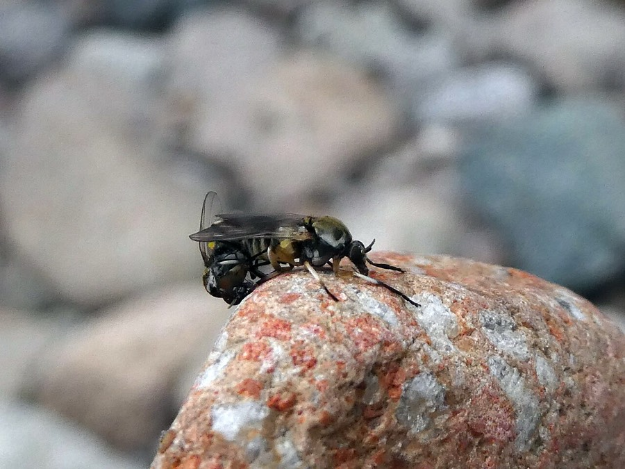
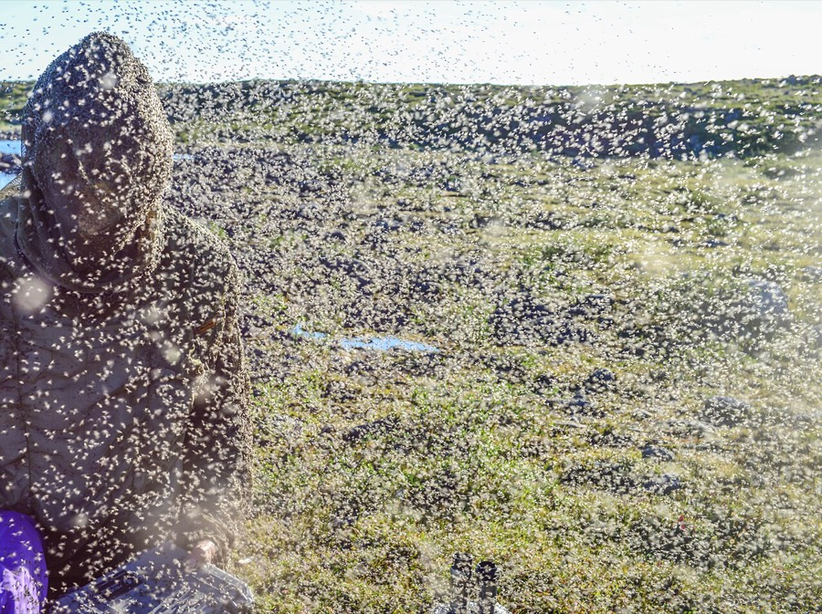

Black Flies
Simuliidae
- Also called
- Blackflies, Simuliidae
- Kind
- insect
- Native to Vermont
- yes
- Legal status
- Not regulated. (checked 2026-11-01)
Pictures


Names
Black flies (family Simuliidae). About 40 species occur in New Hampshire and only four or five are considered significant biters or annoyances (UNH); the number for Vermont is not stated in the sources read.
Range and habitat
Not stated for Vermont. UNH: black flies breed only in running water, from large fast streams to small slow rivulets, and the biting species breed most abundantly at the outlets of ponds and lakes.
How to identify (by season; look-alikes and the key difference)
From the photograph, not from a page's wording: a small, dark, humpbacked fly with short legs and clear wings held flat over its back. The UNH sheet adds that some species swarm around the head or body without biting; Simulium jenningsi is a late-season species, most annoying in August and September along larger northern rivers, that swarms around the head and usually does not bite.
Through the year
Dates are typical for Vermont and shift with elevation and year; "approximate" means the source gave a season and the dates are a translation of it.
| When | What | Look for | What to do | Dates |
|---|---|---|---|---|
| May 1 to Jun 30 | flight (watch) | In New Hampshire the main biting species emerges in early to mid-May in the south, and in late May or early June in the north, and can stay abundant to the end of June (into July in the mountains) (UNH Extension). | Work in the early morning, midday or late evening; the sheet says flies peak around 9 to 11 AM and 4 to 7 PM. | approximate |
Signs on the land (tracks, scat, browse, nests, holes, calls)
Clouds of small flies around your head near a stream or the outlet of a pond or lake, in spring and early summer. The swarm photograph here is from the Canadian arctic and shows a swarm on a person and the ground.
Role in the forest (what it eats, what eats it, what it needs)
Only the females bite and they need blood to lay eggs (males feed on nectar); in most species they feed on birds or other animals. Females lay eggs on vegetation or the water surface; the larvae attach to submerged objects and filter tiny particles from the water; they pupate underwater and the adults rise on air bubbles. Some species overwinter as eggs and hatch when the water reaches about 40 to 50 degrees F; others overwinter as larvae, pupate at about 37 to 38 degrees F and emerge from late April through May (UNH).
What helps it thrive (not something to encourage; this is what it needs, so you know where it is)
Clean, running water. UNH: large black fly populations suggest clean streams, since most species do not tolerate organic pollution. They also need warm-blooded hosts. The sheet says flies are active only by day and are most active on humid, cloudy days and before storms.
Managing for it (habitat practices) and living with it (conflicts and damage)
UNH says individuals should not try to control the larvae: treating a small area does not help, and surface-water pesticide applications need a state permit that is unlikely to be granted to an individual; adult control by fogging gives only hours of relief. Protection (clothing that closes at the wrists and neck, trousers tucked into boots, light colors, a head net, repellent with DEET, picaridin or IR3535, and timing work for the early morning, midday or late evening) is in Preventing Tick and Biting Fly Bites in the Woods.
Legal status
None found.
Sources
- UNH Extension, Black Flies [fact sheet]: https://extension.unh.edu/resource/black-flies-fact-sheet (read 2026-11-01)
What this page is based on
Kind of source: primary-agency and extension (read through summarizing fetches and one text read)
What was read: UNH Extension 'Black Flies' fact sheet (summarizing fetch, 2026-11-01): breeding, species and seasons in New Hampshire, protection, control. No Vermont black fly source was found; the New Hampshire dates are a stand-in and run later at elevation. The sheet gives no description of the fly's appearance in the summary read; the identification below is from the photograph, which is of a fly from Italy (species not named on its file page).
Last checked: 2026-11-01
Vermont Woodland Owner's Reference, built 2026-11-09. Rules and dates here are summaries, not legal advice; dates shift with elevation and year. Photo and recording credits · Note: _reference/US-VT/Species/Black Flies.md